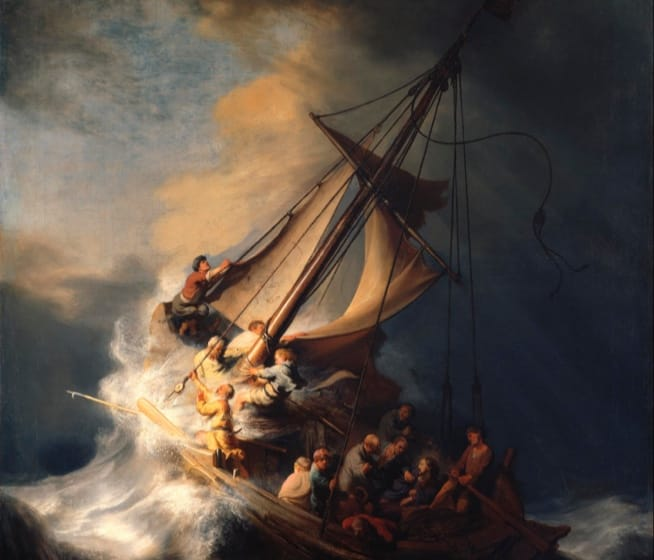
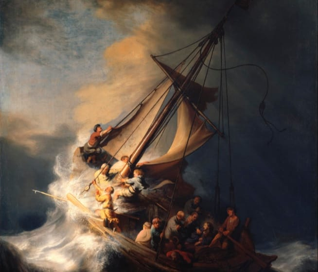

1633
The painting, in vertical format, shows a close-up view of Christ's disciples
struggling frantically against the heavy storm to regain control of their fishing
boat. A huge wave beats the bow and rips the sail. One of the disciples is seen
vomiting over the side. Another one, looking directly out at the viewer, is a
self-portrait of the artist. Only Christ, depicted on the right, remains calm.
Go to source
 
